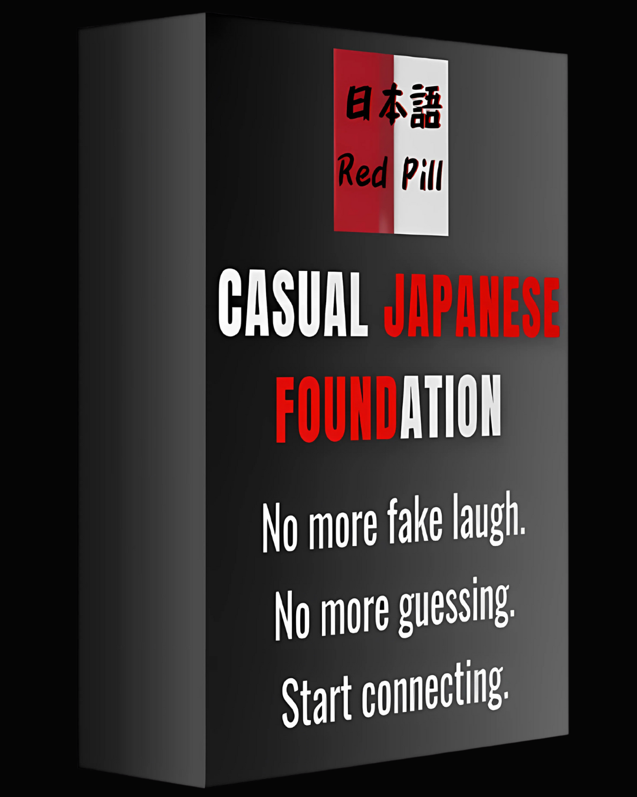
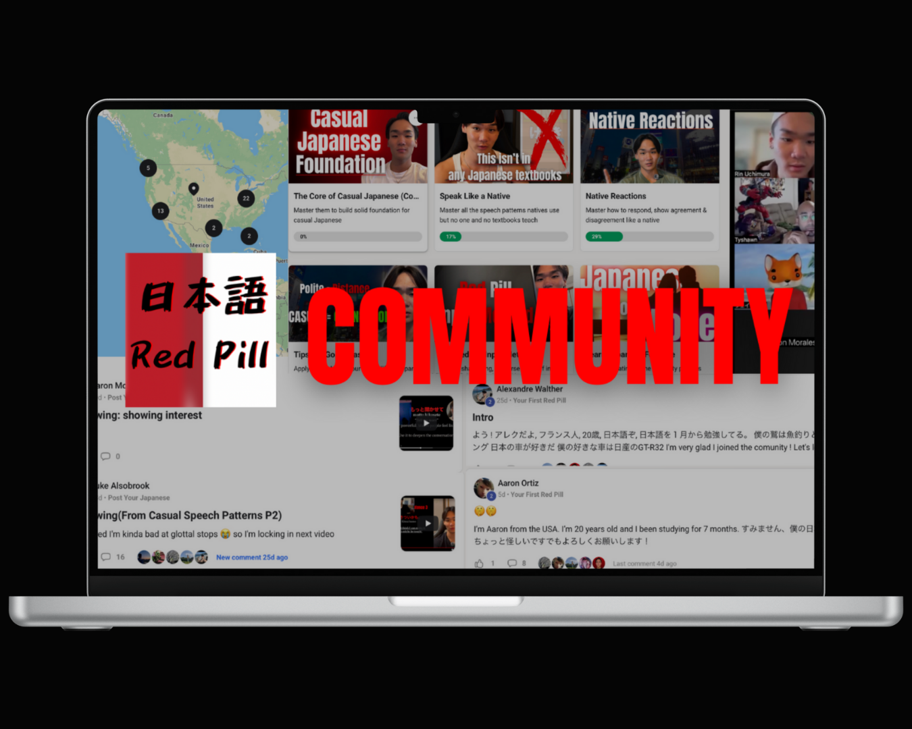

Does this sound like you?
You've studied for months. Maybe years. You can order food. Pass JLPT tests. But when it comes to real conversations... something’s missing.
You get polite responses—but never real connection
- They treat you like a guest, not a real friend
- You're stuck talking to their "polite brain"
You’re fluent on paper—but feel invisible in Japan
- Fluent grammar, but awkward in group settings
- Always eating lunch with foreigners, not locals
- Dating feels stiff, like an interview
You’re stuck with “fake Japanese” no one actually uses
- You shadow textbook patterns that natives never say
- You sound polite—but not human
The Problem with the Japanese Language Market
You've been trying your best. But the truth is — most systems were never built to make you connect in real Japanese. Here's why they failed you.
Textbooks and apps ignore casual Japanese
• Keep you stuck in formal patterns forever
• Don’t care about your social success
Tutors just copy textbooks
• Even "native conversations" on YouTube sound fake
• Teaching you to talk to masks, not real people
They miss how Japan actually works
• No understanding of "polite brain" vs "casual brain"
• Perfect outsider Japanese that keeps you an outsider
The Two Sides of the Japanese Brain

Most foreigners never make it past the surface—
because no one teaches them this:
The Polite Brain
(What foreigners usually meet)
• Formal, distant, survival mode
• The mask Japanese people wear with outsiders
• Kind and respectful—but emotionally unavailable
• This is why people say “Japanese are polite… but hard to connect with”
The Casual Brain
(The real person underneath)
• Emotional, funny, authentic
• How they talk with real friends and family
• Where trust and real connection live
• This is the Japanese person you actually want to know
The Breakthrough
When you speak casual Japanese you unlock their real brain and create true connection
What Casual Japanese Unlocks
Unlock Real Connection
- Build deep friendships—not just polite exchanges
- Be seen and understood as your true self
- Get past surface-level small talk
Unlock Emotion & Personality
- Speak with tone, humor, and nuance
- Show who you really are—not textbook phrases
- Feel natural, not stiff or robotic
Unlock Natural Romance
- Flirt, connect, and express interest smoothly
- Make conversations feel fun—not like interviews
- Let attraction and chemistry flow naturally

Unlock Native Media
- Understand what characters really mean
- Catch jokes, sarcasm, and emotions
- Watch like a native—not a student
What Was Missing All Along
The Japanese learning world is flooded with textbooks, apps, and teachers...
But none of them teach the one thing that actually gives you a social life in Japan:
Casual Japanese.
Not just to sound natural—
But to connect, to belong, and to build the life you came to Japan for.
That’s why
I built the first
complete system
for learning
casual Japanese
Nothing like this existed before. I built it from scratch — not for passing tests, but for building real friendships, deep relationships, and a social life in Japan.
There are two ways to join the system. Pick the one that fits your style.
Path 1:
Self-Paced Course

A full breakdown of casual speech, patterns, and phrases — explained by a native.
Learn anytime, on your own schedule.
Path 2:
Community + Coaching

Join weekly calls, get shadowing feedback, connect with other learners, and speak real Japanese with me.
What my students are saying
"After joining, I found that I could speak more naturally and express myself much more"
- Ian
"Before joining I couldn't show emotion but I started picking up emotion in speech and I sound more like a person now"
- Aaron
- Andreas
- Lili
- Chris
- Matthieu

- Brendan
Frequently Asked Questions
Won't casual Japanese be rude in business settings?
It's always safe to stay polite in business first. But imagine you're at dinner with colleagues and they start speaking casually to each other - you won't understand what they actually mean. You'll miss the real conversation, the jokes, the bonding. Learning casual Japanese means you can understand when others use it, even if you choose to stay formal.
What if I make mistakes and offend someone?
Japanese people are incredibly forgiving when they see you're trying to connect genuinely. Making small casual mistakes shows you're human. Staying formal forever is actually more offensive - it says "I don't trust you enough to be myself."
Is this just slang and bad grammar?
Not at all. Casual Japanese follows specific patterns and rules - it's just different rules than textbooks teach. You're learning the "correct" way to be casual, which is actually harder than being formal.
Is this okay if I'm a beginner?
Yes, but learn hiragana first (which I include as a bonus). You don't need to be advanced to start understanding casual patterns. In fact, it's better to learn casual Japanese early so you don't get stuck in formal-only mode like most learners.
Stop learning textbook Japanese that keeps you lonely. Master casual Japanese and unlock real connections.
Choose Your Path TodayWho Am I?

Hey, I’m Rin. I’ve helped over 10,000 learners connect on a real, human level with Japanese people by teaching them the language most teachers ignore: casual Japanese.
This isn’t just about grammar or passing tests. It’s about connection. It’s about finally being seen. If you’re ready to stop sounding like a textbook and start building real friendships, you’re in the right place.
Two Paths to Casual Japanese Mastery
Both lead to the same destination - real connections in Japan. Choose the journey that fits your style.
THE COMMUNITY
For social learners
- Weekly group calls with me
- Daily challenges and practice
- Direct access to me
- Active tribe of 90+ learners
- All courses included & new weekly content
Perfect if you:
- Learn better with others
- Want ongoing support
- Like real-time feedback
- Prefer community learning
THE COURSE
For focused learners
- Complete step-by-step curriculum
- Self-paced video modules
- Structured learning path
- Downloadable resources
- Lifetime access
Perfect if you:
- Prefer your own pace
- Want clear structure
- Like to go deep solo
- Learn better independently
Still deciding? Most successful students choose the Community for ongoing support.